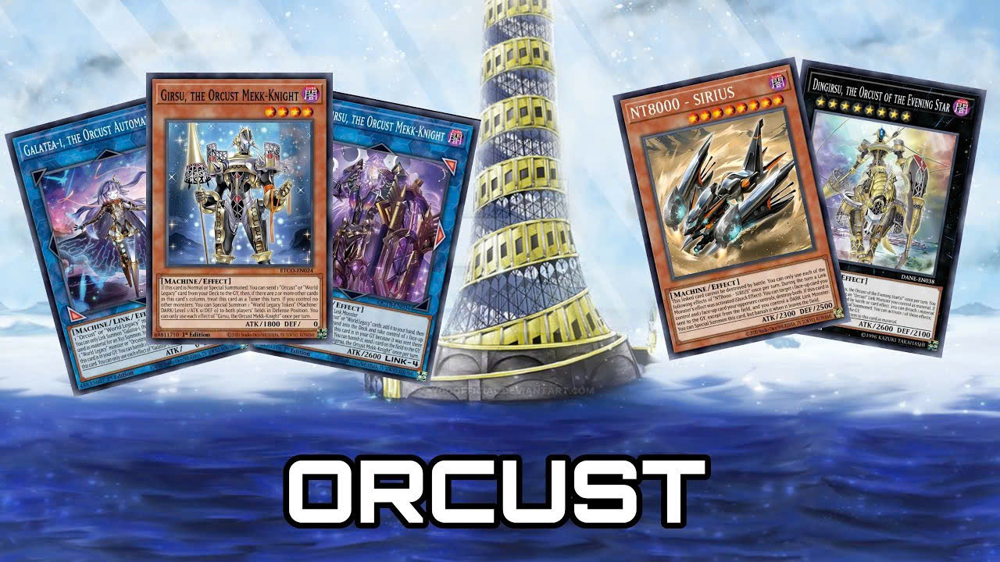
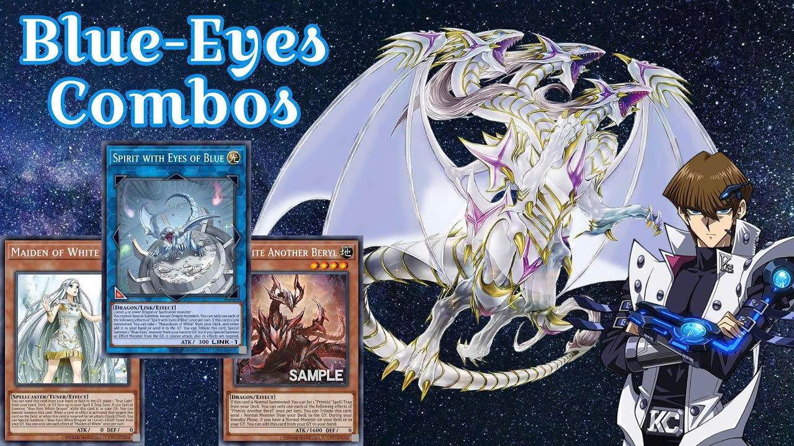
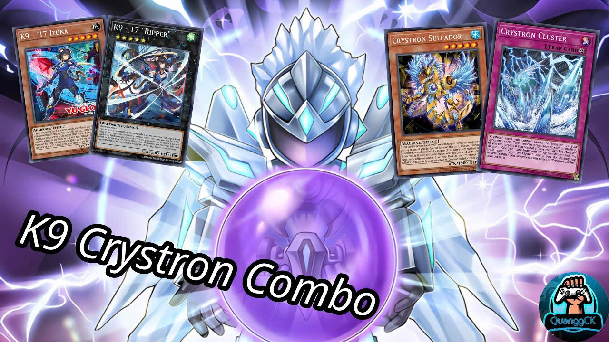
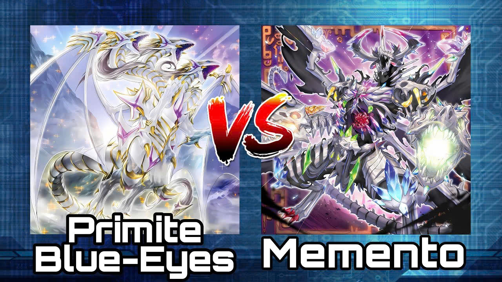
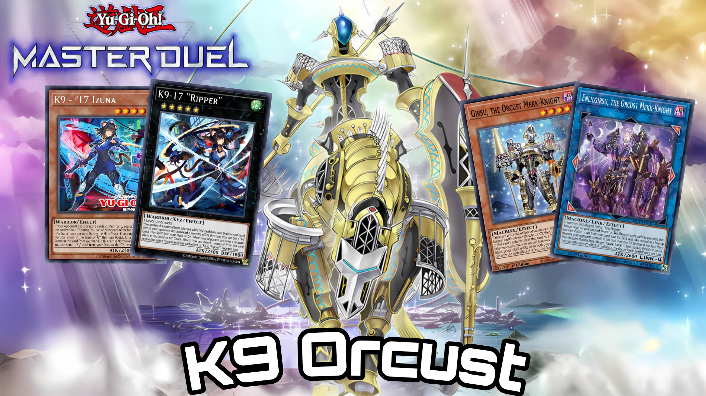
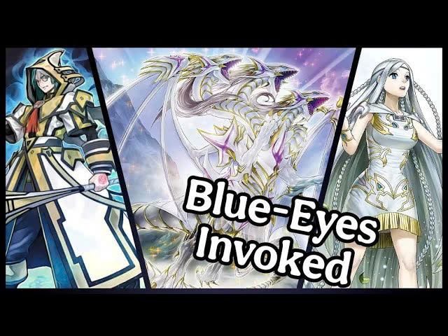
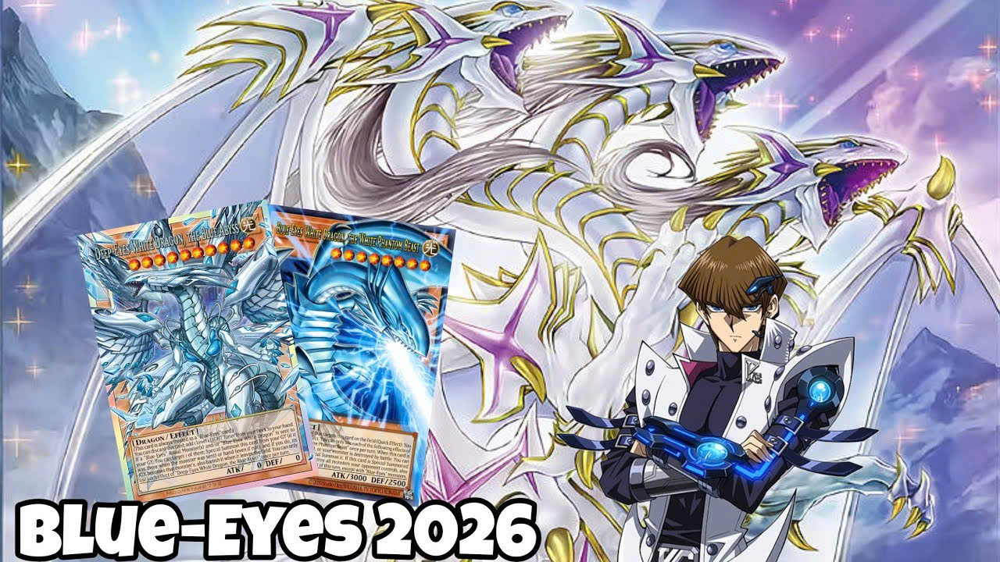

QuanggCK
Đăng xuất
QuanggCK
Các video yêu thích nhất

5:33
ORCUST PURE COMBO POST Battles of Legend: Monster Mayhem.
6,7k lượt xem • 8 tháng trước

7:58
Blue-Eyes Combos POST Structure Deck: Advent of The Eyes of Blue.
6,4k lượt xem • 2 năm trước

5:33
K9 Crystron Combo Tutorial | Yu-Gi-Oh! - (EDOPRO).
5,7k lượt xem • 7 tháng trước

8:58
Primite Blue-Eyes vs Memento | Yu-Gi-Oh! - (EDOPRO).
4,3k lượt xem • 1 năm trước

7:48
K9 Orcust COMBO GUIDE POST DOOD (Doom Of Dimensions) - Yu-Gi-Oh!.
3,3k lượt xem • 5 tháng trước

4:39
NEW Blue-Eyes Invoked combos POST Structure Deck: Blue-Eyes White Destiny.
2,8k lượt xem • 11 tháng trước

4:39
Blue-Eyes with NEW Overframe cards - Deep-Eyes White Dragon, The Blue Abyss.
220 lượt xem • 2 tuần trước
10:11
K9 Cyber Dragon combos + Decklist POST Selection Pack: Strike Of Justice | MDPRO3 | MASTER DUEL.
87 lượt xem • 2 tuần trước